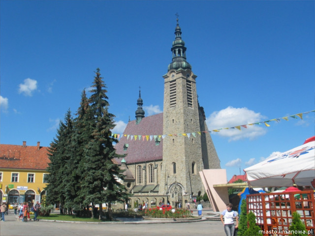
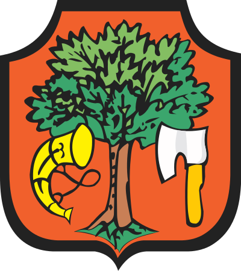
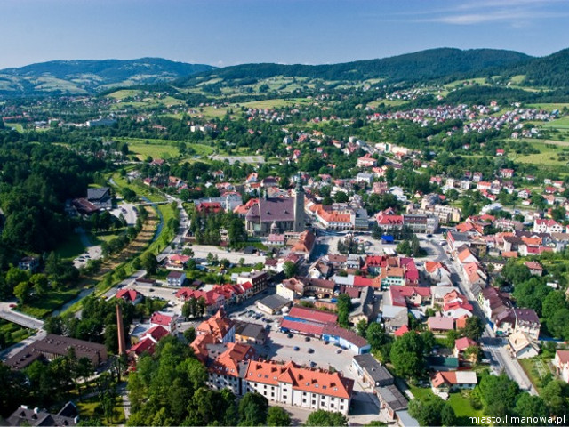
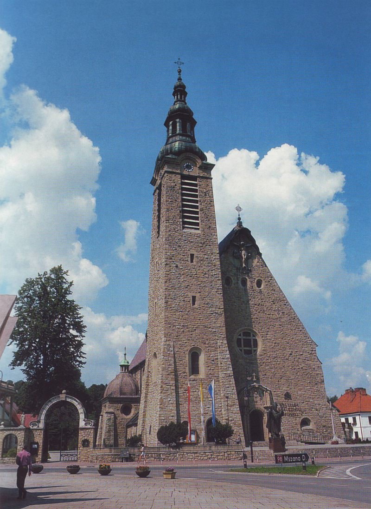
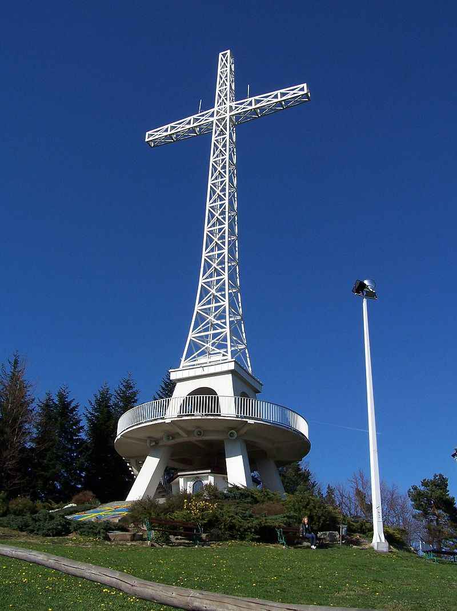
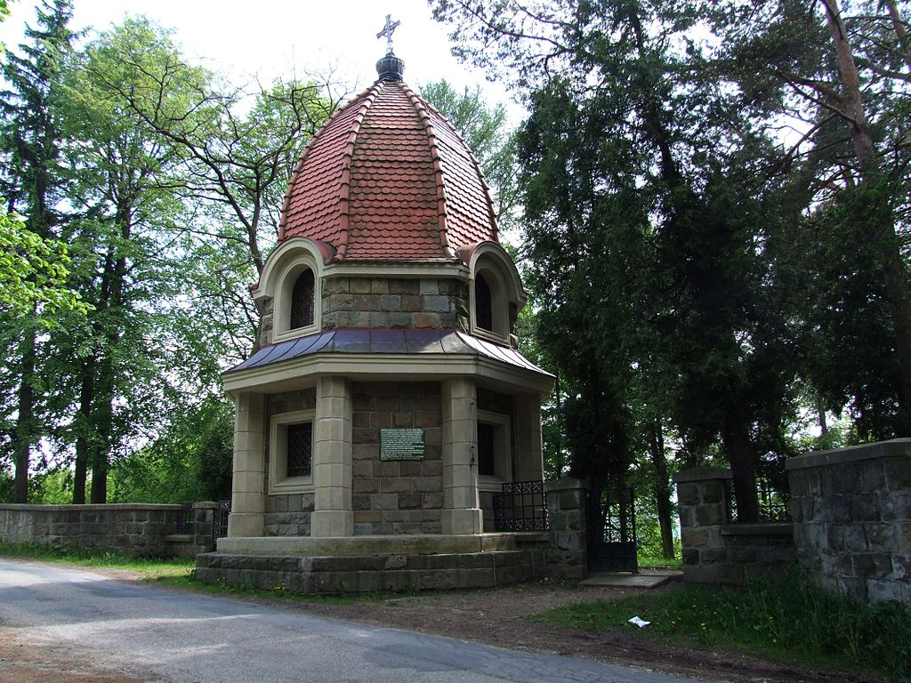

|  |  |  |
Limanowa to miasto w województwie małopolskim, w Beskidzie Wyspowym, położone w kotlinie górskiej pomiędzy wzniesieniami Miejskiej Góry (716 m n.p.m.), Lipowego (569 m n.p.m.) i Jabłońca (624 m n.p.m.). Znajduje się na południowy wschód od Krakowa, 25 km na zachód od Nowego Sącza. Miasto ma powierzchnię 19 km² i mieszka w nim 14738 osób.
 Bazylika Matki Boskiej Bolesnej - jeden z najważniejszych budynków w Limanowej. Świątynia wybudowana w latach 1910-1918 z inicjatywy ks. Kazimierza Łazarskiego, według projektu Zdzisława Mączeńskiego, z okazji 100. rocznicy Konstytucji 3 Maja. W 1991 roku przez papieża Jana Pawła II została podniesiona do rangi bazyliku mniejszej. Kościół jest secesyjną, murowaną, trójnawową bazyliką wzniesioną w polskim stylu narodowym o ścianach zewnętrznych wyłożonych kamieniem. Ołtarz główny wykonany został w 1920 r. W jego centralnej części znajduje się łaskami słynąca rzeźba Matki Boskiej Bolesnej z XIV wieku, wykonana z drewna lipowego.
 Krzyż na Miejskiej Górze - zwany również Krzyżem Jubileuszowym. Zbudowany w latach 1997-1999. Ma wysokość 37 metrów i rozpiętość ramion 13 m, a w momencie wybudowania był największym krzyżem w Polsce. Jego konstrukcja jest dwuczęściowa. Dolna część, wsparta na czterech nogach-podporach, ma wysokość 9 m, jest żelbetowa, a w połowie jej wysokości znajduje się kolisty taras widokowy. Górna część to stalowa konstrukcja kratownicowa o wysokości 28 m. Cała konstrukcja ma masę 350 ton. Projektantem krzyża był limanowski architekt Leszek Pilawski. Poświęcenia krzyża dokonał ówczesny biskup tarnowski Wiktor Skworc.
 Cmentarz wojenny nr 368 Limanowa-Jabłoniec - cmentarz wojenny z I wojny światowej. Na cmentarzu pochowano 161 żołnierzy austro-węgierskich, jednego niemieckiego i 247 rosyjskich, którzy zginęli w dniach 7-12 grudnia 1914 r. w czasie operacji limanowsko-łapanowskiej. W miejscu śmierci dowódcy wojsk austrackich, Othmara Muhra, znajduje się pomnik.
Więcej informacji na temat miasta dostępne na stronie
Urzędu Miasta Limanowa